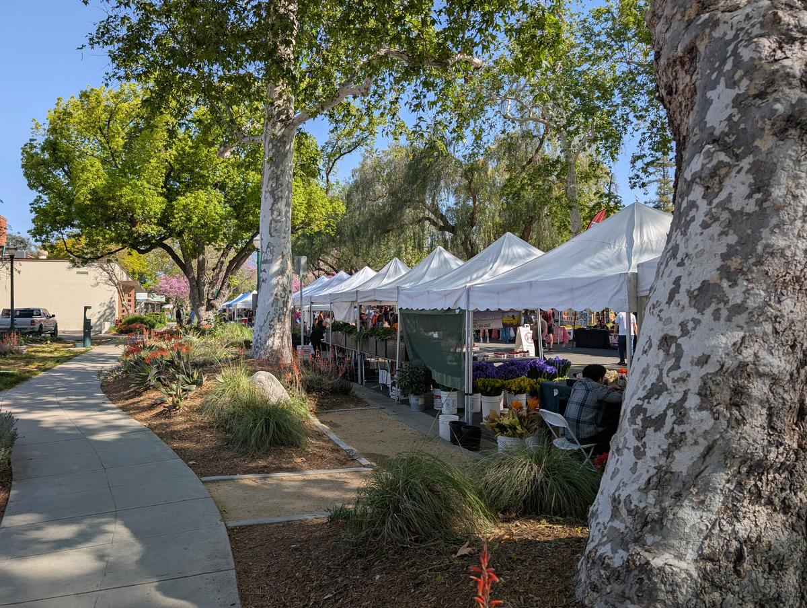

Claremont is a town that prides itself on access. Whether you're looking for a meditative morning in a hidden garden or a high-energy hike with a view of the Pacific, the "City of Trees" is remarkably generous if you know where to look.
The Academic High-Culture
You don't need to be a student to take advantage of the billion-dollar campuses that anchor the Village. The Claremont Colleges are essentially a free, open-air museum system.
Benton Museum of Art (Pomona College)
Formerly known as the Pomona College Museum of Art, this sleek, modern space is always free and open to the public. It houses everything from Renaissance masterworks to cutting-edge contemporary installations. Open Thursday 11am-8pm, Friday through Sunday 11am-6pm. Closed Monday through Wednesday.
"Dividing the Light" by James Turrell (Pomona College)
A world-class Skyspace installation in Draper Courtyard — the only James Turrell Skyspace open to the public in Southern California. The LA Times called it "one of the best works of public art in recent memory." A canopy frames the sky above; at dusk and dawn, a lighting program shifts the colors from goldenrod to turquoise, altering your perception of the sky itself. Free and open anytime. Corner of 6th & College Way.
Scripps College Gardens
Walking through Scripps feels like stepping into a Mediterranean postcard. Don't miss the Margaret Fowler Garden — a hidden, walled courtyard with olive and orange trees, an enormous wisteria vine, and a 1946 fresco by Mexican muralist Alfredo Ramos Martinez. It's the quietest spot in town.
Marston Quad (Pomona College)
The definitive campus green, dating to 1923. It's the perfect spot for a picnic or people-watching under the massive elms, framed by Bridges Auditorium and the Carnegie Building.
The Campus Walk
Just wandering through the 5Cs is an architectural masterclass. From the mid-century cool of Harvey Mudd to the Ivy-League-West vibes of Pomona to the Mediterranean beauty of Scripps, it's the ultimate no-cost scenic route. All campuses are open to the public.
The Great Outdoors
Claremont's natural beauty is its biggest selling point, and the city has preserved some of the best terrain in the Inland Empire for public use.
Claremont Hills Wilderness Park
The 5-mile loop is a local rite of passage. It's free to hike and offers panoramic views that, on a clear day, stretch all the way to Catalina Island. Over 2,000 acres of open space with 870 feet of elevation gain. Free parking at the trailhead on Mills Ave.
Thompson Creek Trail
For something paved and stroller-friendly, this 4.4-mile out-and-back trail runs along the northern edge of the city. It's a favorite for runners, cyclists, and families who want the mountain views without the steep incline. Connects to Higginbotham Park along the way.
The Village Social Scene
The downtown core isn't just for spending money at boutiques — it's a hub for community events that cost nothing to attend.
Sunday Farmers Market
While the heirloom tomatoes aren't free, the atmosphere is. Every Sunday from 8am to 1pm at 2nd & Harvard, it's the city's weekly "town square" moment — perfect for browsing local crafts and listening to live street musicians.

First Saturday Art Walk
On the first Saturday of every month, Village galleries and shops stay open late (6-9pm) to debut new exhibitions. It's a festive, wine-and-cheese-adjacent evening that makes the whole town feel like a gallery opening. Free.
Summer Concerts in the Park
Free Monday night concerts at Memorial Park every week from July through August. The Kiwanis Club runs a concession stand starting at 6pm. Bring a blanket, claim your spot on the lawn early, and enjoy everything from reggae to classic rock under the elms.

Folk Music Center
Walking into this Claremont institution on Yale Avenue is like entering a museum of global music. While it's a retail shop, browsing the incredible collection of rare and antique instruments from around the world is a legitimate (and free) cultural experience. They also host a free Open Mic on the last Sunday of every month. Open Tue-Sat.
Village Window Shopping
The clean-aesthetic boutiques on Yale and Harvard are beautiful to look at, even if you're just there for the design inspiration. Park once at Memorial Park and use the walk to the Village as your daily cardio.
The library reset: The Claremont Helen Renwick Library is more than just books. It's a quiet, air-conditioned sanctuary with rotating local interest displays and free community events year-round.
Self-guided walking tours: Claremont Heritage offers free self-guided tour routes of the Village, the colleges, Historic Route 66, Indian Hill Boulevard, and North Claremont. Available on their website.
Public art: Claremont has a rich history in mosaic art, murals, and painted utility boxes throughout town. Keep an eye out as you walk — the city runs an active public art program that turns everyday infrastructure into gallery pieces.
The Turrell at sunset: "Dividing the Light" is beautiful anytime, but the lighting program at dusk is the real show. Time your campus walk to end there around sunset for the full experience.